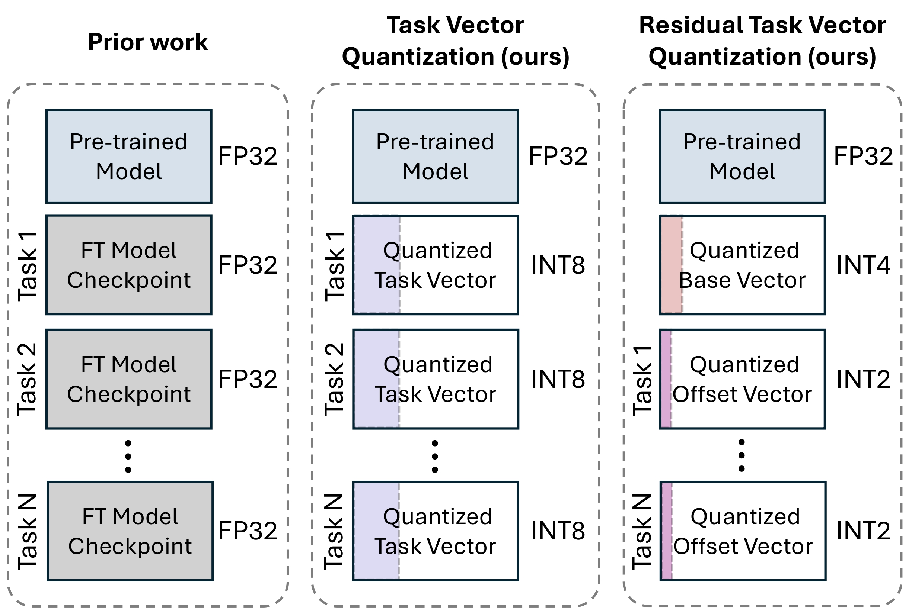
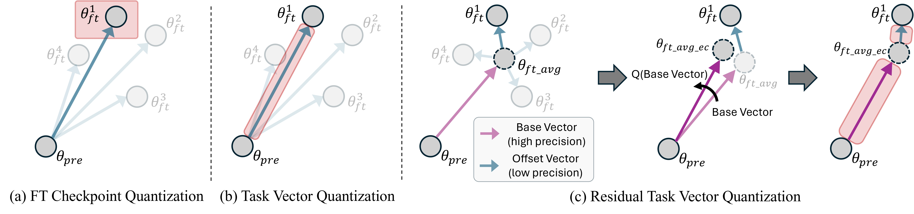
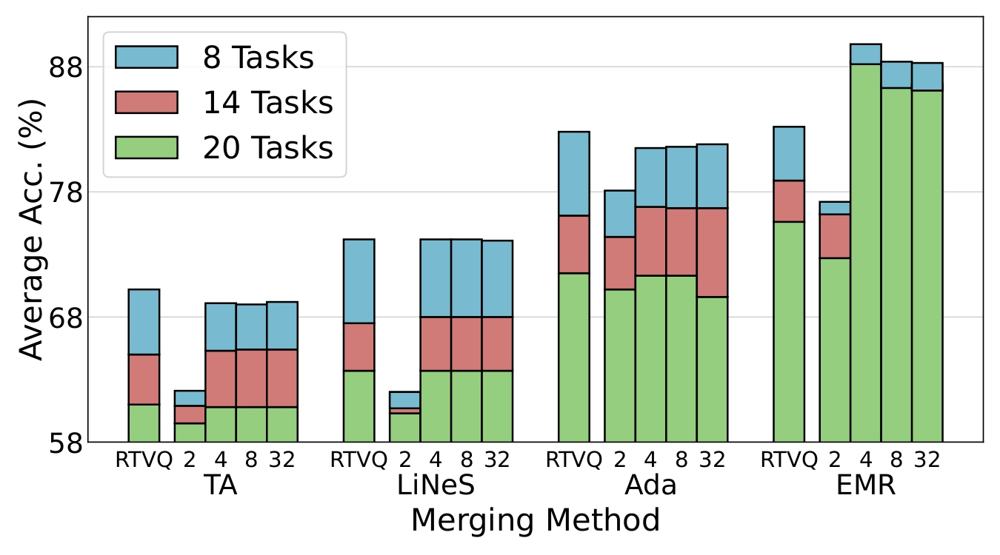
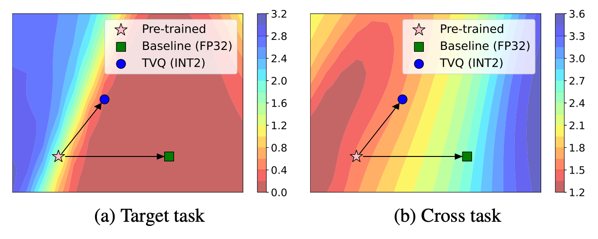
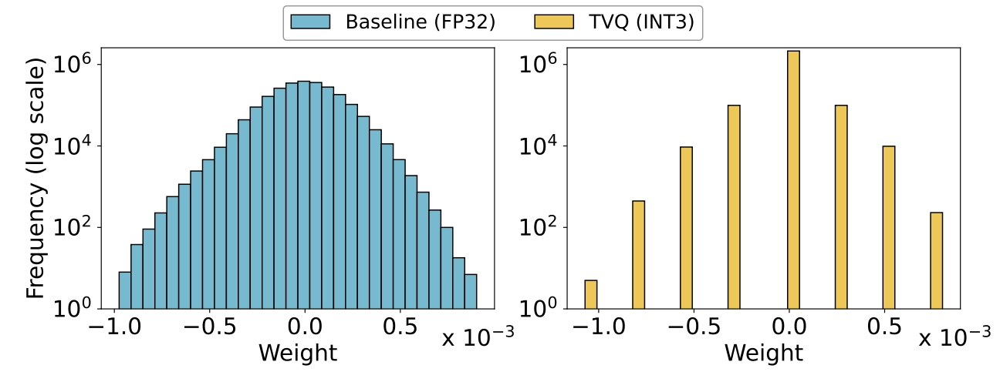

Model merging enables efficient multi-task models by combining task-specific fine-tuned checkpoints. However, storing multiple task-specific checkpoints requires significant memory, limiting scalability and restricting model merging to larger models and diverse tasks. In this paper, we propose quantizing task vectors (i.e., the difference between pre-trained and fine-tuned checkpoints) instead of quantizing fine-tuned checkpoints. We observe that task vectors exhibit a narrow weight range, enabling low precision quantization (≤ 4 bit) within existing task vector merging frameworks. To further mitigate quantization errors within ultra-low bit precision (e.g., 2 bit), we introduce Residual Task Vector Quantization, which decomposes the task vector into a base vector and offset component. We allocate bits based on quantization sensitivity, ensuring precision while minimizing error within a memory budget. Experiments on image classification and dense prediction show our method maintains or improves model merging performance while using only 8% of the memory required for full-precision checkpoints.
| # Tasks | Baseline | TVQ (ours) | RTVQ (ours) | ||
|---|---|---|---|---|---|
| FP32 | INT8 | INT4 | INT2 | B3O2 | |
| 8 | 9.1 GB | 2.3 GB | 1.1 GB | 0.6 GB | 0.7 GB |
| 14 | 16.0 GB | 4.0 GB | 2.0 GB | 1.0 GB | 1.2 GB |
| 20 | 22.8 GB | 5.7 GB | 2.9 GB | 1.4 GB | 1.7 GB |
Model merging aims to combine multiple well-trained models into a single set of parameters. However, storing the checkpoints required to combine these models entails significant memory overhead. For instance, a ViT-L/14 model needs 1.14 GB per fine-tuned checkpoint, totaling 22.8 GB for 20 tasks. In resource-constrained environments like an edge device, such high memory demands for checkpoints hinder scaling to larger models and more tasks. Our approach overcomes this limitation, achieving up to a 13x reduction in storage costs while maintaining the original model performance.
To assess the impact of quantization on model merging, we first quantize fine-tuned checkpoints (FQ), task vectors (TVQ), and residual task vectors (RTVQ), then apply these weights to various merging methods. We compare all methods with their full-precision (FP32) counterparts across multiple tasks. Our goal is not to maximize absolute performance but to show that even with highly compact quantization, the model remains effective across multiple tasks.
Directly quantizing fine-tuned checkpoints maintains acceptable performance at 8-bit precision but suffers a significant drop in accuracy at 4-bits. In contrast, TVQ show much better stability. Even at 4-bit and 3-bit precision, model accuracy stays close to FP32. However, at 2-bit, performance drops sharply, indicating that excessive compression introduces substantial quantization noise. RTVQ overcomes these limitations with a robust approach. It decomposes each task vector into a shared base vector (3 bits) and a residual vector (2 bits), requiring about 2.375 bits per task. This vector decomposition reduces the performance drop seen in 2-bit TVQ while preserving most of the accuracy benefits of higher-bit quantization.

With 14 and 20 tasks, storing full-precision fine-tuned checkpoints becomes more impractical and highlights the need for effective quantization. Note that, as the base vector is globally shared among tasks, RTVQ scales favorably by effectively reducing the per-task bit requirement as task numbers increase.
| Method | Segmentation ↑ | Depth Estimation ↓ | Normal Estimation ↓ | |||||||||
|---|---|---|---|---|---|---|---|---|---|---|---|---|
| FP32 | TVQ-INT4 | TVQ-INT2 | RTVQ | FP32 | TVQ-INT4 | TVQ-INT2 | RTVQ | FP32 | TVQ-INT4 | TVQ-INT2 | RTVQ | |
| Individual | 52.0 | 52.0 (0.0) | 37.7 (-14.3) | – | 41.5 | 41.4 (-0.1) | 62.5 (+21.0) | – | 24.2 | 24.2 (0.0) | 34.2 (+10.0) | – |
| Task arithmetic | 31.6 | 31.5 (-0.1) | 36.4 (+4.8) | 36.1 (+4.5) | 24.0 | 24.0 (0.0) | 26.2 (+2.2) | 24.6 (+0.6) | 30.6 | 30.6 (0.0) | 36.1 (+5.5) | 32.6 (+2.0) |
| Ties merging | 39.9 | 40.0 (+0.1) | 36.1 (-3.8) | 37.0 (-2.9) | 27.3 | 27.2 (-0.1) | 26.5 (-0.8) | 24.6 (-2.7) | 36.2 | 36.2 (0.0) | 37.0 (+0.8) | 32.6 (-3.6) |
| MagMax | 24.7 | 25.4 (+0.7) | 29.9 (+5.2) | 29.4 (+4.7) | 23.9 | 24.2 (+0.3) | 25.6 (+1.7) | 24.7 (+0.8) | 30.3 | 30.0 (-0.3) | 32.2 (+1.9) | 31.1 (+0.8) |
| Breadcrumbs | 34.1 | 34.3 (+0.2) | 32.2 (-1.9) | 34.0 (-0.1) | 27.2 | 27.2 (0.0) | 28.4 (+1.2) | 27.7 (+0.5) | 36.9 | 37.0 (+0.1) | 40.6 (+3.7) | 38.3 (+1.4) |
| EMR-Merging | 41.5 | 44.8 (+3.3) | 21.3 (-20.2) | 34.1 (-7.4) | 19.4 | 18.8 (-0.6) | 25.5 (+6.1) | 22.1 (+2.7) | 26.5 | 26.6 (+0.1) | 45.2 (+18.7) | 35.0 (+8.5) |

Quantized task vectors deviate from their original directions in the loss landscape, sometimes shifting toward directions more beneficial for other tasks.

Our quantization process naturally prunes the task vector’s less impactful parameters by mapping small-magnitude weights to zero, leading to a sparsity of 56.7%.
@article{kim2025task,
title={Task vector quantization for memory-efficient model merging},
author={Kim, Youngeun and Lee, Seunghwan and Jung, Aecheon and Ryu, Bogon and Hong, Sungeun},
journal={arXiv preprint arXiv:2503.06921},
year={2025}
}